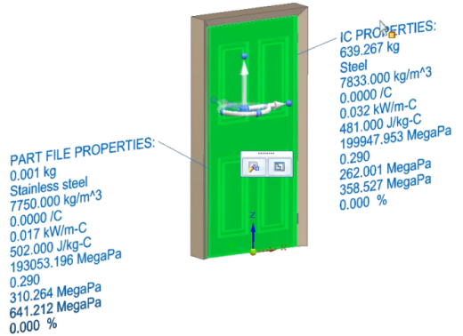
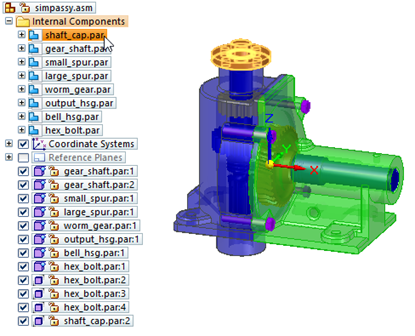
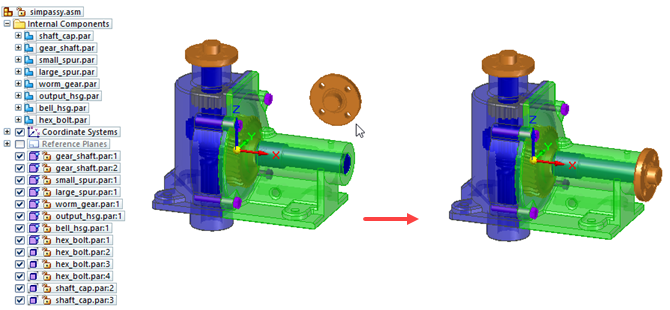
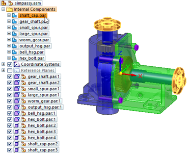
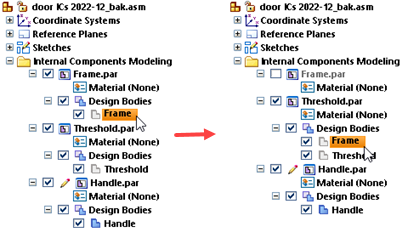

Working with internal components
Internal components are representations of model structure in Solid Edge that contain all of the geometry and structure of an assembly within a single document. With an internal component structure, the geometry (including design bodies, construction bodies, sketches, reference planes and coordinate systems, and PMI) for multiple components and product structure are hosted in the assembly without the need for additional files and links.
Internal components are ideal for representing and working with imported assembly structures within Solid Edge, for example, as purchased parts or parts provided by third parties with which your Solid Edge models need to interact. If you import CAD data and want to do further design and manipulation of the data, you should first publish internal components as Solid Edge parts and assemblies.
By contrast with external components (the ordinary model structure supported by Solid Edge), assembly documents, with few exceptions, contain only structural information, and they link to part documents or subassemblies that contain the geometric information.
Creating internal components
There are two ways to create internal components:
-
You can create and edit an internal component as a single multibody part in the context of an assembly using the Home tab→Components group→Create Part In-Place list→Create Internal Component command .
For information about this method, see Create an internal component in an assembly.
-
When you open a non-Solid Edge document to import it into Solid Edge, on the Open dialog box, click the Options button and select the Create Internal Components option.
Applying material to internal components
You can assign a material to internal components that are imported or modeled. A single material can be associated with one or more internal components.
With materials assigned, you can save attributes such as density, and then use the Physical Properties command to calculate physical properties, such as Center of Mass and Center of Gravity, for the internal components.
The material and physical properties assigned to an internal component are saved with the component when you publish it.
For more information, see Apply a material to an internal component.
Using internal components
You can select and show or hide internal components as you would other components within an assembly model, and you can add dimensions and other forms of PMI to and between internal components and other components with an assembly model.

If you want to make changes to model data represented by an internal component, you must first publish the internal components as parts and assemblies. This creates individual part and assembly documents to contain the model, and replaces the internal components within the parent assembly with references to the new Solid Edge files.
Creating internal references to internal components
You can create internal references to internal components in an assembly. These references are available for commands such as Pattern, Mirror, Insert Assembly Copy, Replace Part, Transfer, and Disperse.
Managing internal components with Property Manager
If an active document contains an internal component, you can use Property Manager to edit existing properties or create new properties for the internal component.
When you select the Property Manager command , the Property Manager dialog box is displayed so you can edit property values. File-based properties that you cannot edit are disabled and appear in gray.
You can only edit the properties for internal components in the active assembly document. Internal components in other attached documents are not listed in Property Manager. All internal references to the same internal component have the same property values.
When you create an internal component, all the property values are blank. You can click the property cell and type in a value.
To add a custom property to an internal component, you must assign a value for the internal component in Property Manager.
You can use the New option on the Show Properties dialog box to add new properties for internal components. After adding file properties, use the Publish Internal Components command to save to disk the files containing the internal components.
Dragging internal components into an assembly
You can drag internal components into an assembly. When you locate an internal component in the collector, all the internal references to the internal component highlight.

After you drag the internal component into the assembly, you can use the Assemble command to apply relationships between the internal component and one or more target parts in the assembly.

In this example, when you select the internal component in PathFinder, two internal components highlight in the assembly.

This is because there are two internal references to the internal component within the assembly.
Reordering design bodies between internal components
If multiple internal components are open for editing simultaneously, then you can drag a Design Body from one internal component to another in PathFinder.

Exporting files containing internal components
You can use the Save as Translated command to export files containing internal components to the following formats:
-
Parasolid (*.x_t)
-
JT (*.jt)
-
IFC (*.IFC)
-
STEP (*.step, *.stp)
-
OBJ (.obj)
-
FBX (.fbx)
-
3MF (.3mf)
-
STL (.stl)
-
ACIS (.sat)
-
IGES (.iges, .igs)
-
CATIA V4 (.model)
-
CATIA V5 (.catpart)
PMI is supported only when exporting to JT.
The geometry and structure of the file containing the internal components is maintained during export and you will get the same output as if you were exporting traditional files.
You can use 3D PDF Publish to publish files containing internal components. You can use Technical Publications to view and open files containing internal components.
How do I
Create an internal component in an assemblyApply a material to internal components
Publish internal components
Learn more
Publishing internal componentsLook up more details
Create Internal Component commandCreate Internal Component Options dialog box
Create Internal Component command bar
Activate Internal Component command
Publish Internal Components command
Publish Internal Components dialog box